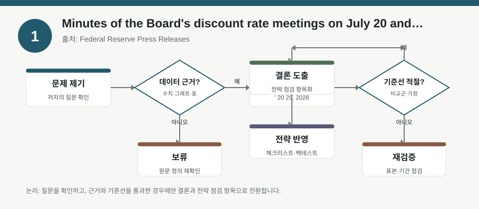
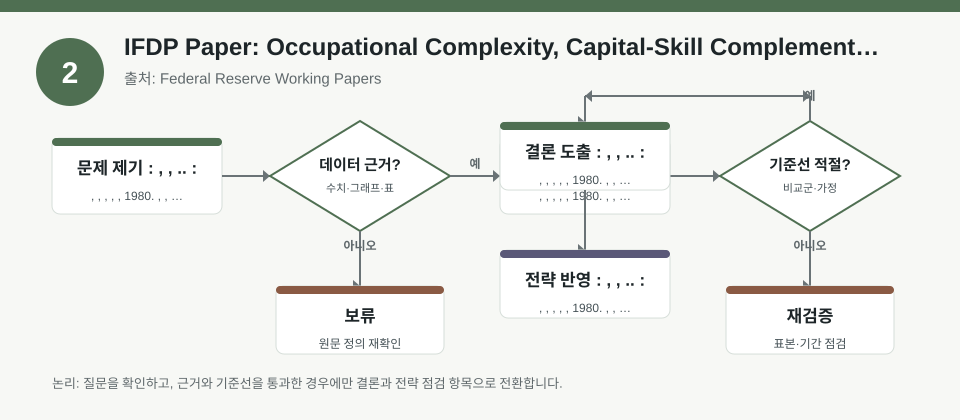
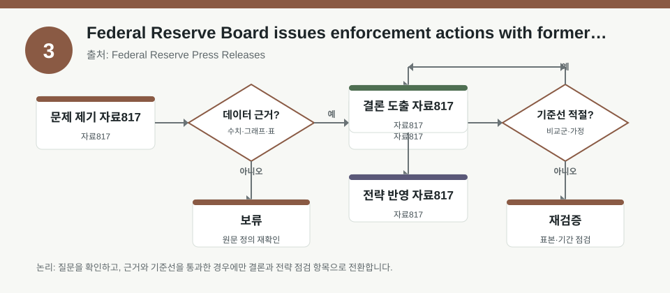

핵심 요약
- 결론: 이번 3개 자료는 미국 통화정책 신호, 임금 구조의 팩터 해석, 금융기관 규제 리스크를 함께 보면서 한국 투자자의 섹터·금리·FX 민감도 점검에 활용할 수 있습니다.
- 원칙: 수치가 메타데이터에 없는 경우에는 사실로 단정하지 말고, 원문에서 확인해야 할 항목으로 분리해 해석해야 합니다.
주목할 자료
| 번호 | 자료 | 출처 | 원문 | 핵심 내용 | 데이터 포인트 | 리스크/한계 |
|---|---|---|---|---|---|---|
| 1 | Minutes of the Board's discount rate meetings on July 20 and July 29, 2026 | Federal Reserve Press Releases | 원문 보기 | 미국 할인율 회의록 성격의 공시로, 금리 판단과 유동성 조건 해석에 참고되는 자료입니다. | 통화정책 스탠스, 자금조달 비용, 금리 민감 업종 점검 포인트 | 실제 발언 강도와 표결/의견 차이는 원문 확인 필요 |
| 2 | IFDP Paper: Occupational Complexity, Capital-Skill Complementarity, and the Evolution of U.S. Wage Inequality: A Quantitative Analysis | Federal Reserve Working Papers | 원문 보기 | 직무 복잡성과 임금 성장의 관계를 정량 분석한 자료로, 인적자본·생산성 팩터 해석에 도움이 됩니다. | 직무 복잡성 팩터, 숙련 프리미엄, 산업별 인건비 구조 | 미국 데이터·모형 가정이 한국 시장에 그대로 이식되지 않음 |
| 3 | Federal Reserve Board issues enforcement actions with former employee of Regions Bank and former employee of United Community Bank | Federal Reserve Press Releases | 원문 보기 | 금융기관 관련 제재 공시로, 규제·컴플라이언스 리스크를 점검하는 사례 자료입니다. | 규제 리스크, 내부통제, 신용·평판 리스크 체크포인트 | 개별 사건의 사실관계와 범위는 원문 및 관련 공시 확인 필요 |
자료별 상세
1. Minutes of the Board's discount rate meetings on July 20 and July 29, 2026

- 핵심: 미국 할인율 회의록은 정책금리와 직접 1:1 대응은 아니어도, 단기 자금시장 스트레스와 유동성 판단을 읽는 단서로 볼 수 있습니다.
- 데이터 포인트: 한국 투자자는 KOSPI 대형주 중 금융, 건설, 성장주처럼 금리 민감도가 다른 업종의 상대 노출을 함께 점검할 수 있습니다.
- 리스크: 회의록의 세부 논점, 이견, 지역별 자금사정 차이는 원문에서 확인해야 하며 메타데이터만으로 단정하면 안 됩니다.
- 투자전략 반영 예시: 포트폴리오 체크리스트에 미국 금리 기대, 달러 강세 가능성, 한국 원화 민감 수출주와 내수주의 노출 차이를 항목화할 수 있습니다.
- 실행 예시: 보유 종목을 업종별로 나눠 금리상승 민감군, 방어군, 달러 연동군으로 표시한 뒤 월 1회 스트레스 테스트를 해볼 수 있습니다.
2. IFDP Paper: Occupational Complexity, Capital-Skill Complementarity, and the Evolution of U.S. Wage Inequality: A Quantitative Analysis

- 핵심: 직무 복잡성이 높을수록 임금 성장과 연결되는 경향을 정량적으로 보려는 연구로, 노동시장 팩터를 해석하는 틀을 제공합니다.
- 데이터 포인트: 한국 투자자는 반도체, IT서비스, 플랫폼, 바이오처럼 고숙련 인력이 중요한 섹터의 비용 구조와 마진 민감도를 따로 볼 수 있습니다.
- 리스크: 미국의 직무 분류와 임금 데이터, 그리고 자본-숙련 보완성 가정이 한국 기업과 동일하지 않을 수 있습니다.
- 투자전략 반영 예시: 실적 추정 시 매출 성장뿐 아니라 인건비 상승률, 인력 확보 난이도, 자동화 투자 효과를 체크리스트에 넣을 수 있습니다.
- 실행 예시: 업종별로 “고숙련 비중”, “인건비 민감도”, “생산성 개선 여지” 3개 항목을 5점 척도로 점검해 비교표를 만들 수 있습니다.
3. Federal Reserve Board issues enforcement actions with former employee of Regions Bank and former employee of United Community Bank

- 핵심: 제재 공시는 개별 사건이지만, 금융주와 신용시장에서는 내부통제와 규제 리스크가 밸류에이션 변수로 작용할 수 있음을 보여줍니다.
- 데이터 포인트: 한국 투자자는 은행, 증권, 카드, 저축은행 관련 종목의 규제 민감도와 평판 리스크를 별도 항목으로 관리할 수 있습니다.
- 리스크: 공시 대상, 위반 행위의 범위, 제재 수준은 사건별로 다르므로 요약만으로 일반화하면 안 됩니다.
- 투자전략 반영 예시: 한국 금융주를 볼 때 대손충당금, 내부통제 이슈, 감독당국 검사 일정, 해외 규제 노출을 체크리스트에 반영할 수 있습니다.
- 실행 예시: 분기 실적 발표 전후로 금융주 보유 리스트에 “규제·제재 뉴스 확인”, “내부통제 이슈 확인”, “신용비용 변화 확인” 항목을 추가할 수 있습니다.
팩터·리스크·포트폴리오 관점
- 핵심: 이번 자료는 금리 팩터, 인적자본 팩터, 규제 리스크를 각각 분리해 보라는 신호로 읽을 수 있으며, 한국 투자자는 업종별 민감도를 묶어서 관리하는 방식이 유효합니다.
- 검수: 메타데이터에 없는 수치, 회의록의 세부 표현, 연구모형의 추정값, 제재의 정확한 범위는 반드시 원문에서 확인해야 합니다.
정리
- 결론: 미국 정책·노동·규제 자료는 한국 주식 포트폴리오의 금리, 환율, 업종, 컴플라이언스 노출을 점검하는 참고축이 될 수 있습니다.
- 다음 확인: 원문에서 정책 문구, 추정 방법, 사건 범위를 확인한 뒤 KOSPI/KOSDAQ 업종별 체크리스트에 반영해야 합니다.